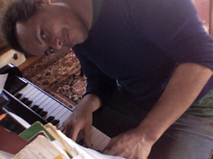
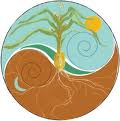
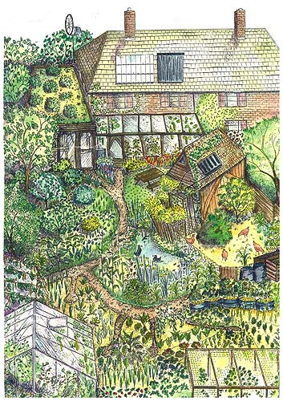
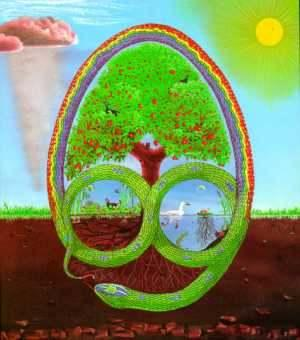
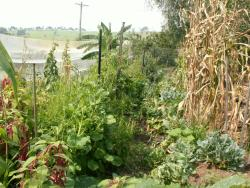
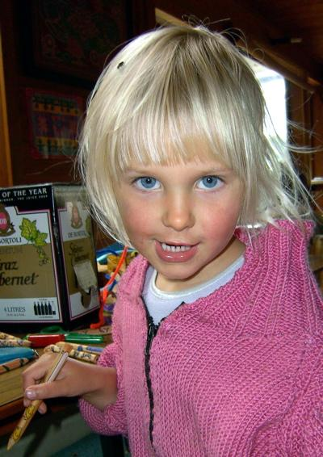

Hi, I'm Steven John Ryan
Syntithenai, a greek word for synthesis appeals to me. Fitting software components together. Building gardens. Creating just feels good.
Hi, I'm Steven John Ryan
Syntithenai, a greek word for synthesis appeals to me. Fitting software components together. Building gardens. Creating just feels good.
Professional
My formal education was in mathematics and biochemistry but I've been writing software since my first Amstrad PC in 1980. I have worked a contract software developer for the last fifteen years specialising in browser based software. In a word ... HTML5 I am a fan of open standards and open source technologies. I believe the great strength of the Internet is as a sphere for collaboration and cooperation.I have helped many clients deploy network database applications using web technologies.
I am excited by the possibilities for mobile software on a web platform as browsers become more capable with the latest html5 features.
I've recently become a fan of Docker to make my life as a developer MUCH easier.
Currently working on a web based music player with Google Home voice control.

Music
I am a passionate musician. There are few things as fulfilling as being lost in the moment of improvisation.Improvisation is the synthesis of musical structure into a moment in time and place and people.
I am lucky to be able to experience music as something that is done rather than consumed. Taking part in the union of voices in a choir is a thing of great beauty.
As music teacher, I hope I have been successful in passing on the enjoyment of making music.
Home
I own and live on a five acre property (Peppertrees) in the middle of farmland close to Bega, NSW Australia. Over the last seven years I have planted approximately 1000 trees and created extensive vegetable gardens. I have learnt much from the design principals of permaculture.
 Particularly the importance of patient observation and the complexity of interactions.
I am inspired by the work of Masanobu Fukuoka in observing and working with nature to create resilient and sustainable natural systems. Maintaining a close working relationship with natural systems is a vital part of my physical and emotional wellbeing. 
Parenthood
My daughter Sofie is the light of my life.Parenthood brings a whole new meaning to the word love.

"Nice guys finish first", Richard Dawkins.
"Science is spectral analysis. Art is light synthesis.", Karl Kraus
"Enhance and intensify one's vision of that synthesis of truth and beauty which is the highest and deepest reality.", Ovid
"Get the habit of analysis - analysis will in time enable synthesis to become your habit of mind.", Frank Lloyd Wright
"Science is spectral analysis. Art is light synthesis.", Karl Kraus
"Enhance and intensify one's vision of that synthesis of truth and beauty which is the highest and deepest reality.", Ovid
"Get the habit of analysis - analysis will in time enable synthesis to become your habit of mind.", Frank Lloyd Wright